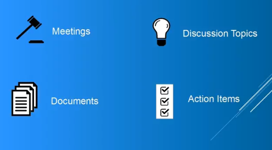

If you have never seen Weaver before, start here. It gives you the basics that all users of Weaver need to know to benefit the most. In less than 10 minutes you will learn about:
Hi my name is Keith Swenson. I am recording this as a quick introduction to Weaver for the first-time user.
You've probably come upon Weaver because you're participating in some group that's using it you only need to know a few things about Weaver so let's go into that.

In Weaver there are four key things we're keeping track of we're going to keep track of meetings documents discussion topics and action items.
Mmeetings hold meeting agendas and all of the notes around a meeting it's to help you get everybody together have everybody on the same page before you start it helps you to run the meeting and and it helps you to track what's going on and keep records of what happened in meetings.
The second major thing we we track is documents these are files they can be Word files they can be spreadsheets they could be PDF files whatever it is they can be also included together with the meetings.
Discussion topics are if there's something that you want to have a discussion on you want to bounce it back and forth and maybe it's something that you're thinking about but not sure about yet and so you want to open it up for discussion discussion topic works like a discussion forum.
Finally action items these this is your to-do list these are things that need to be addressed.
All of these are held together in a thing called a workspace so there will be a lot of workspaces in the system each workspace has a set of people groups of people who can access that workspace. If you're just starting out you may just be involved in one workspace and that's the only workspace you can access or maybe as time goes on you may participate in multiple workspaces. Each workspace is a completely separate space for keeping all of your meetings your documents your discussion topics and your action items.
Now when you see this -- I'll give you a demo in a moment -- but when you see the user interface you'll see a set of navigational items on the left-hand side of the screen and so under Weaver if you ever get lost click on front page. Front page gives you a high-level summary of what's going on in the word space it's got all the latest action items the latest things that have happened and then from there you can get on to some of the other parts of the work space
Back to those four main things meetings it's right there the meetings link will take you there the topics link will take you to discussion topics documents link will take you to the documents objects and action items of course will take you to the list of action items
So let me show you what this looks like so here's a workspace in Weaver and if you want to see a list of the meetings you click on the meetings and that's what you're seeing here is all of the meetings. Some of these will run in the past here's one that may be run in the future if you want to see what the meetings about you click on the meeting this is going to show you the overview of: when the meeting is; where it's going to be; and it's also gonna show you here representation of the agenda so using this agenda you could plan for what you're going to talk about.
If you click on the title of the agenda it opens up. There may be some more information in here some more details this may be assigned to a single person and as you know when the meetings being run you can use this to help run through the meeting.
If you are planning on attending you can indicate before the meeting starts you can indicate that you're going to attend and you can see if anybody else is going to attend the meeting so that's meetings.
Discussion topics are again anything that you want to discuss about. It's pretty easy to create a topic just click there and create it. When you go into looking at a discussion topic there are places where people can make comments on here and you can go back and forth and respond to comments. Emails get sent out along with these so discussion topics are a way of sort of coming bringing the group to a single space.
Documents might look like this. These are a list of documents which have been put into the workspace for everybody to be able to access. If you click on the the title of the document you'll get to a download page. To access almost everything you have to do a download of the file and then of course you you load it in as into your application that uses it just like normal. If you want to add documents it's quite straightforward. You click add documents decide if you want to upload or if you want to link a URL or attach it from Google Documents. If you upload it's quite simple: you just simply drag a document onto the drag field and you'll get a place where you can describe it (e.g. you should all read this before the meeting) so they get an idea of what relationship this has to do with anything else and you click upload.
You're done and so now it's going to list it's now going to be there in the list of documents that are part of the workspace.
The last thing was action items so your action items list is going to contain a list of action items whatever your group has been working on.
If you're assigned one of these you can update the status by clicking on the status and say I'm getting this done you can indicate green yellow red depending on whether things are going well so if you think it's going like like that you can also set if you're tracking a due date on this you could you could track a particular due date and save it down there so this becomes a display where you can everybody can see the status as it's going along. Eventually you get to the point where you want to complete an action item and you'll use this mark completed here another thing you can do is you can accept the action item that just basically tells everybody else that you're you're working on it and then later of course when you complete it when you complete the item it'll disappear from this view. You can see completed items by clicking the completed items checkbox.
Those are the four main things in a weaver workspace: meetings, discussion topics, documents, and action items. Now there's also a few other things that are that are less important or at least you'll use them less often but I'll touch on them briefly here.
There's also a set of decisions as you work through things with meetings you'll be making decisions and those decisions will be recorded so you can click there and take a look at that.
There's a set of labels labels can be used to help organize the documents and the discussion topics that are in there.
Roles are quite important there's a list of of people that are assigned different things.
Finally I mentioned here email we don't I don't have a menu item here for the email but it's also an important thing of what's going on let me show you how those are.
So this is where your decisions would appear and these may be linked back to conversations that created them it's pretty straightforward. If you want to see there's a set of labels labels can be created and here so that you have a set of labels to assign to things.
Roles are listing the people here that are assigned to the various roles if you're new to the space you probably won't be doing anything in the roles but you can at least see this and see who's playing which which positions.
Finally there's also a list of email which has been sent at various times and you know the email goes out and it'll look a little bit like this. You may receive some of these emails as part of working with it generally there are links in the emails that will take you back to the workspace so they're from the email you can go right to the workspace.

So that's the workspace I sort of took you through all of the various different parts of it and you can see them all listed down here on the left.
As for outside of the workspace you should pay attention a little bit to the top bar up here. First of all if you ever get lost you can click the Weaver icon and it'll take you to his place that has all of your stuff now this is across all the workspaces you're working on if you're only working on one workspace you may see only one workspace in here under the user here you can get to your profile settings you can get to a couple of other information about what's going on and then under the workspace pulldown this is gonna list all the workspaces that you've been to recently as well as all your watched workspaces your template workspaces any workspaces you administer or participate or all the workspaces so this pull down here is for all of the workspaces that you're involved in.
If you need to find something in the system use the search button just type in a search term and click return and it'll find whatever places where that that term appears in all across all of the workspaces that you participate in.
So I hope that gives you an idea for a quick introduction to Weaver and to help you to be effective from the beginning